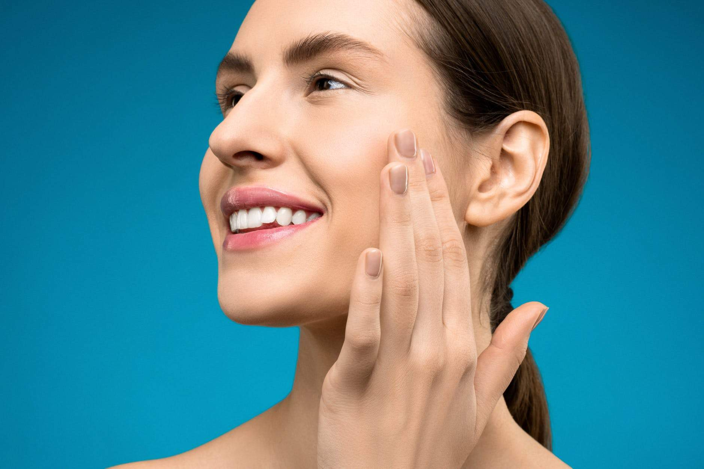
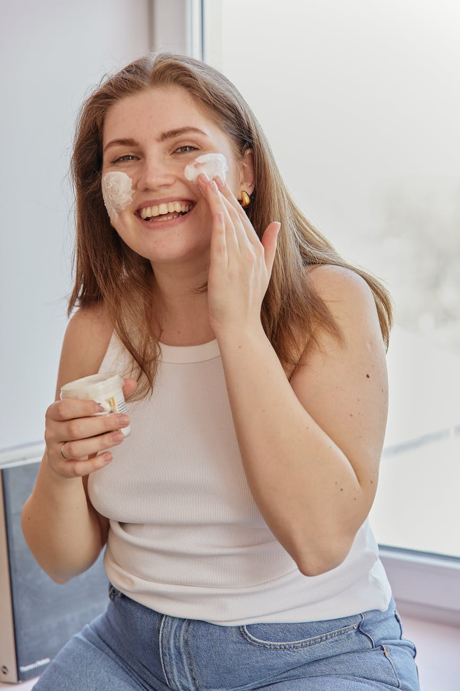
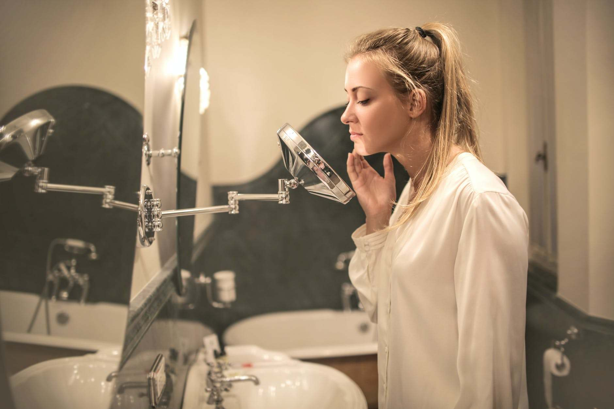

Apa Itu Moisturizing dan Mengapa Pentingnya Pakai Pelembap
Apa itu moisturizing dan mengapa begitu penting bagi kulit? (Foto: Dok. Shiny Diamond/Pexels)
Perawatan paling dasar dari serangkaian skincare, moisturizing merupakan produk pelembap yang berfungsi untuk menghidrasi kulit. Biasanya, produk moisturizing ditujukan pada mereka yang memiliki jenis kulit kering dan sensitif. Sebab, pemilik kulit kering rentan terkena penuaan dini karena kurangnya kadar kelembapan pada kulit.

Maka dari itu, hadirnya moisturizing ke dalam urutan sebelum memakai skincare utama dan makeup, membuat para pemilik kulit kering cenderung sensitif wajib mengaplikasikannya jika ingin mendapatkan wajah yang selalu tampak segar. Pada dasarnya, moisturizing tidak hanya wajib bagi si kulit kering saja, tetapi juga jenis kulit berminyak dan kombinasi harus memakai pelembap secara rutin yang disesuaikan dengan kebutuhan dan kandungannya.
Semua hal yang harus kamu tahu tentang apa itu moisturizing
Setiap orang di dunia ini pasti sudah tahu, jika ingin mendapatkan kulit yang bercahaya nan sehat, harus melakukan serangkaian perawatan dari ujung kepala hingga ujung kaki. Dalam perawatan wajah, moisturizing adalah langkah dasar memakai pelembap sebelum menggunakan skincare atau makeup. Berperan penting untuk menyehatkan, tujuan moisturizing dilakukan pada wajah agar mencegah hilangnya kelembapan pada kulit dan mengunci kadar kelembapan supaya tetap seimbang. Memberikan efek kenyal dan halus pada kulit, produk moisturizing biasanya kaya akan kandungan bahan dasar jojoba oil, avocado oil, petroleum jelly, maupun argan oil.

Selain itu, perhatikan juga produk pelembap yang ingin digunakan. Jangan sampai memilih produk moisturizer yang tidak sesuai dengan jenis kulitmu. Misalnya kamu memiliki kulit berminyak, sebaiknya hindari pelembap berbahan dasar minyak dan pilihlah pelembap dengan kandungan utama air berbentuk gel. Sedangkan mereka yang memiliki kulit kering, bisa mendapatkan hidrasi maksimal dari formulasi moisturizer berbentuk krim yang lebih kental.
Dalam penggunaannya, waktu yang paling tepat untuk moisturizing selain sebelum makeup adalah setelah mandi atau berenang, sesudah membersihkan wajah dari sisa-sisa riasan, mencukur rambut di area tubuh tertentu, dan eksfoliasi. Wajib dilakukan, moisturizing setelah mandi dengan air hangat begitu penting. Meski membuat tubuh terasa lebih rileks, rupanya berendam di dalam air hangat dapat menghilangkan semua kelembapan dan minyak alami dari kulitmu sehingga menjadi kering dan kasar. Maka dari itu, jangan pernah melewatkan pelembap sesaat selesai ritual menenangkan tubuh dan pikiran di kamar mandi.
Sedangkan untuk penggunaan di wajah, pelembap efektif diaplikasikan sesudah melakukan eksfoliasi pada malam hari. Hilangnya sel kulit mati dari kulit, membuat pelembap menyerap dengan baik karena pemakaian moisturizer bermanfaat untuk menenangkan kulit yang iritasi akibat eksfoliasi. Ulangi lagi pemakaian pelembap di pagi hari sebelum mengaplikasikan tabir surya untuk mendapatkan perawatan wajah yang maksimal, sebanyak dua kali sehari.
Alasan pentingnya moisturizing
Dari awal, sudah berkali-kali disinggung mengenai pentingnya pemakaian pelembap. Mungkin beberapa diantara kamu berpikir, mengapa produk moisturizing begitu penting diterapkan dalam kehidupan sehari-hari? Well, meski tidak sedikit individu yang berpendapat bahwa moisturizing hanya membuang waktu, faktanya memakai pelembap pada wajah dapat membuat kulit lebih tampak sehat dan awet muda karena mempunyai kadar kelembapan yang telah diseimbangkan, sehingga memiliki fungsi sebagai pencegah penuaan dini.

Pemakaian produk moisturizing secara rutin juga berdampak baik pada peningkatan kapasitas kulit untuk menahan air serta membantu untuk rehidrasi kulit agar wajah tampak lebih cerah setiap harinya. Moisturizing dapat menenangkan kulit sensitif yang berujung menimbulkan rasa gatal dan bercak kemerahan, disarankan untuk memilih pelembap dengan kandungan bahan alami seperti lidah buaya, chamomile, oatmeal, dan madu.
Teliti dalam memilih produk pelembap
Sama seperti produk perawatan wajah lainnya, dalam memilih pelembap kamu harus teliti dan menyesuaikannya dengan kebutuhan jenis kulit. Produk moisturizer sendiri tersedia dalam dua bentuk, yaitu cairan atau gel dan krim. Sebelum membeli pelembap, pastikan juga untuk melihat kandungan dalam produk yang akan kamu gunakan. Disarankan untuk mencari pelembab yang diformulasikan dengan asam hialuronat, ceramide, gliserin, SPF, dan noncomedogenic pada label, yang dimana kandungan tersebut berarti tidak akan menyumbat pori-pori wajah.
KEMBALI MEMBACA TIPS LAIN